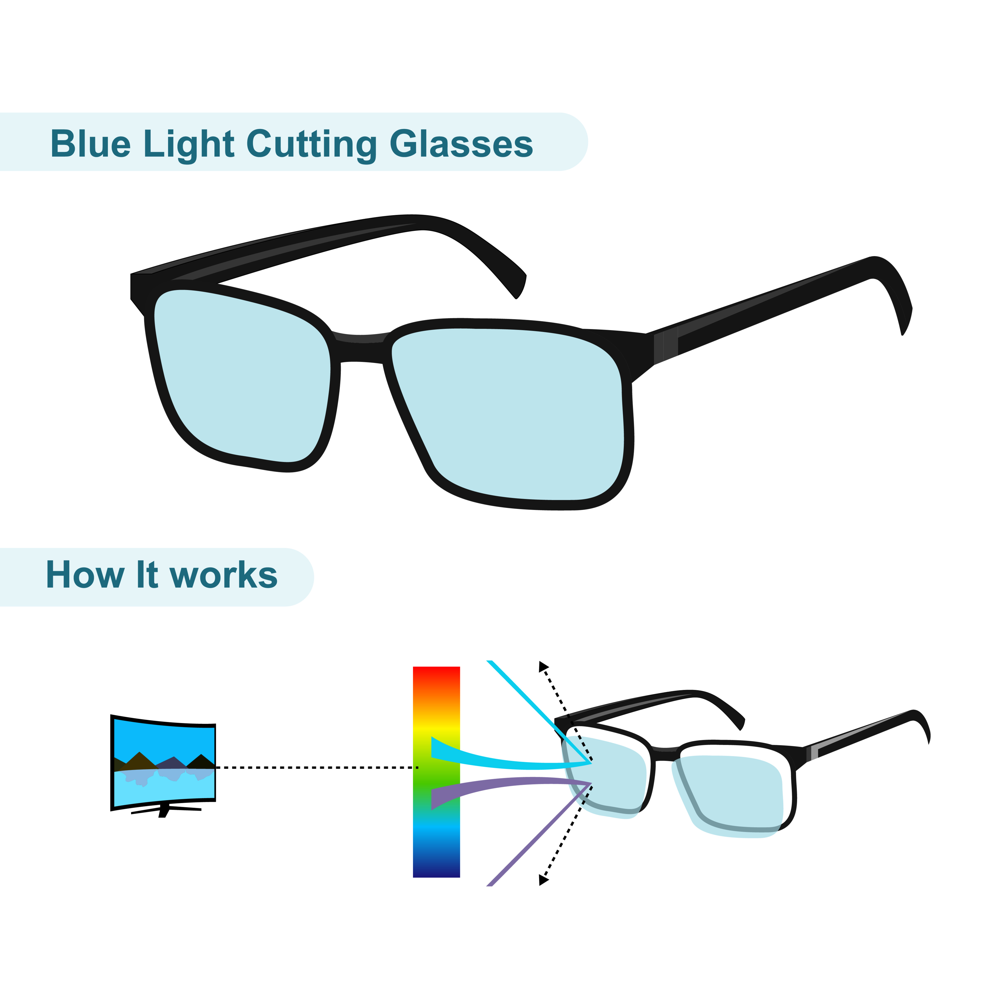
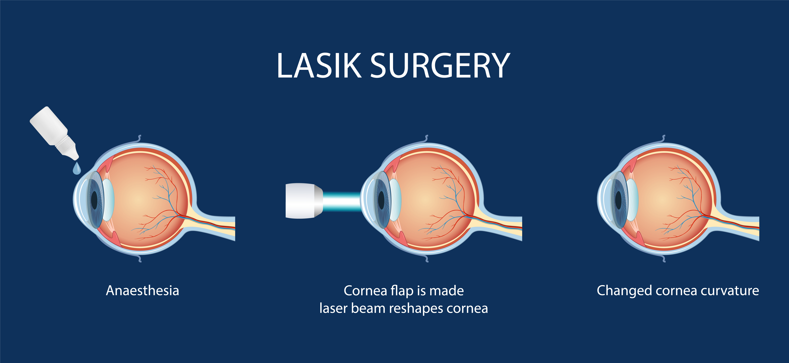

Why Regular Eye Exams Are Essential
Regular eye exams help detect vision problems and eye diseases early, often before symptoms appear. Early detection supports better treatment outcomes and long-term eye health.
Explore practical tips and simple guidance to support clearer vision and better eye-health habits.
Regular eye exams help detect vision problems and eye diseases early, often before symptoms appear. Early detection supports better treatment outcomes and long-term eye health.

Blue light glasses may help some users feel more comfortable during long periods of screen use. They can be useful for students, office workers, and other people who spend many hours using digital devices.

Modern diagnostic screening helps eye-care professionals identify early signs of glaucoma and other conditions. These tests give clearer information about eye health and support earlier care.

Older adults may experience dry eyes, prescription changes, and age-related eye-health conditions. Regular care and practical home habits can help maintain comfort and independence.
LASIK is a procedure used to reshape the cornea in order to improve vision. It may reduce the need for glasses or contact lenses for some patients.
However, LASIK is not suitable for everyone. A professional eye examination is important before making any decision about surgery, because eye health, prescription stability, and lifestyle factors all need to be considered.
Speaking with a qualified eye-care professional can help patients understand the benefits, limitations, and whether a referral for further assessment is appropriate.

Small daily habits can make a meaningful difference to comfort, productivity, and long-term eye health.
Book an appointment with our experienced team to discuss your vision concerns and receive professional guidance.